Turtle Islands
Beach | Southern ProvinceQuiet island beaches with clear water and fresh seafood.
Plan your visit →Explore popular and beautiful places in Sierra Leone.
Quiet island beaches with clear water and fresh seafood.
Plan your visit →
A historic island fort on the Sierra Leone River with a powerful past.
Plan your visit →

A chimpanzee sanctuary in the hills above the capital.
Plan your visit →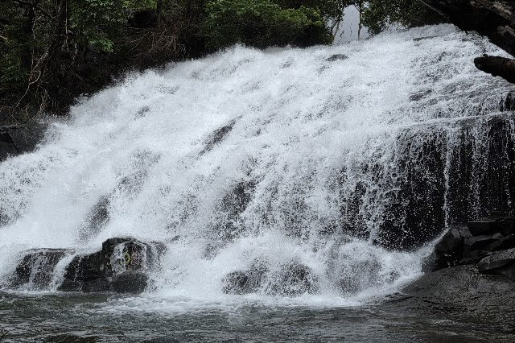
A hillside hike near Hamilton to a tall waterfall, best in the rainy season.
Plan your visit →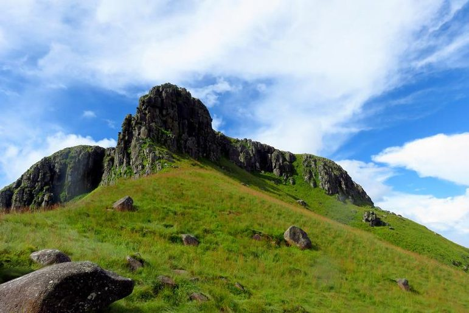
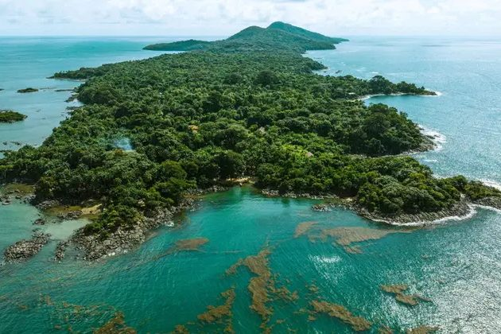
A peaceful island with beaches and a historic village.
Plan your visit →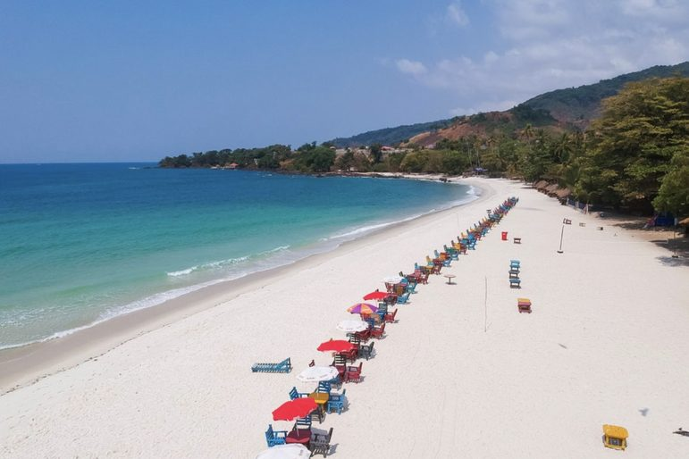
One of the most loved beaches on the Freetown peninsula.
Plan your visit →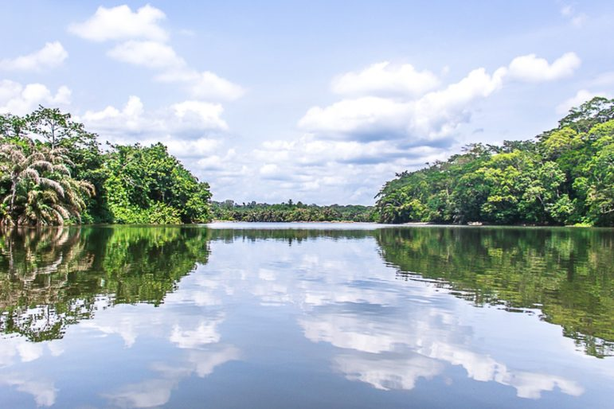
A river island sanctuary known for primates and birdwatching.
Plan your visit →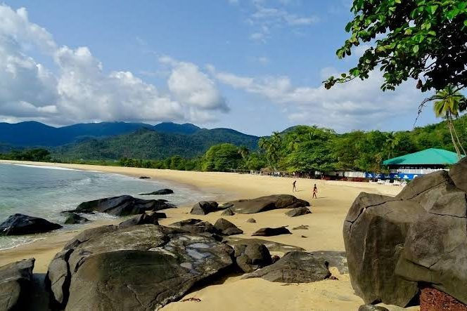
A relaxed beach known for surfing and fishing village life.
Plan your visit →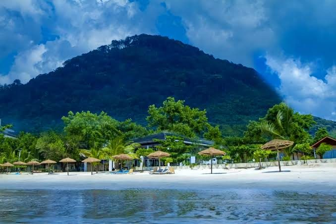
A long golden beach with calm water and seaside restaurants.
Plan your visit →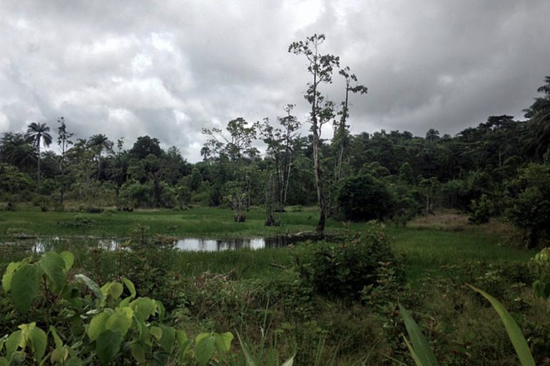
One of the largest remaining rainforests in the country.
Plan your visit →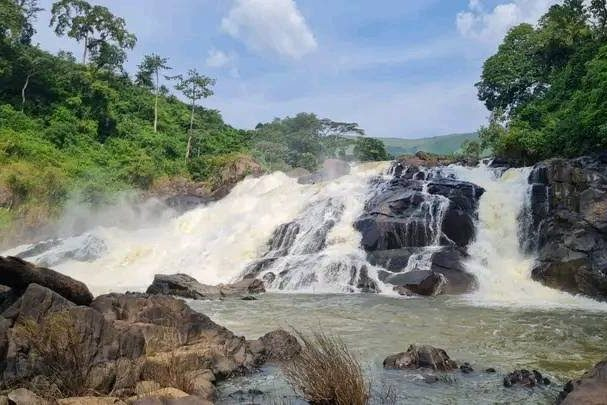
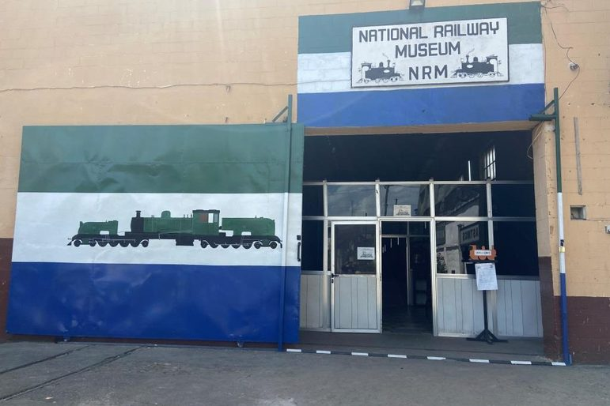
Sierra Leone's railway history, displayed at the museum in Freetown.
Plan your visit →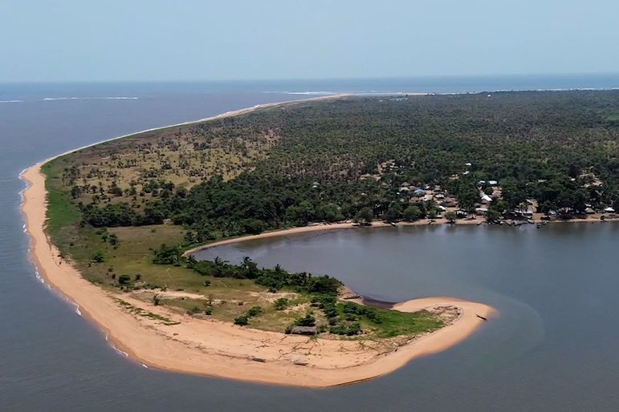
A large island of beaches, mangroves and fishing communities.
Plan your visit →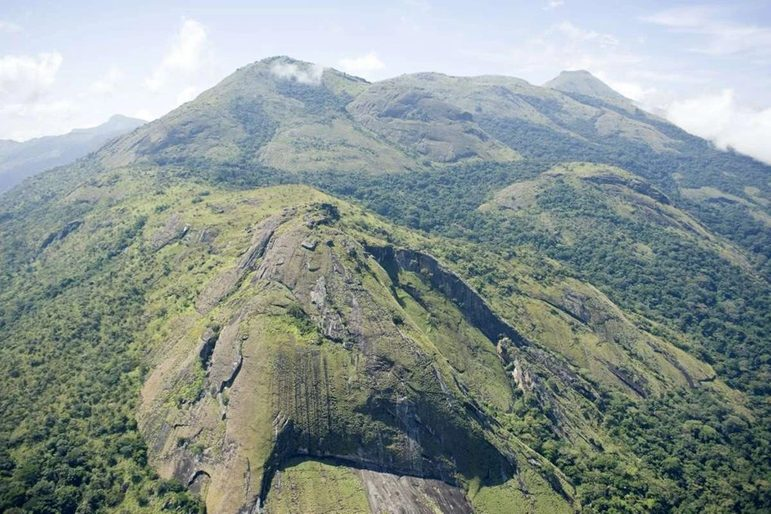
A forest reserve with hiking trails, hills and wildlife.
Plan your visit →